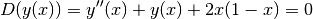
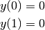
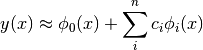
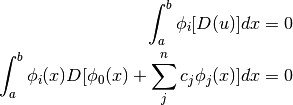
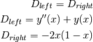
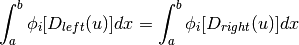
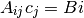
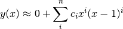

SymPy¶
Implementing the Galerkin Method for solving differential equations¶
Note
This material was taken from a presentation of the Technical University Bochum, from Yijian Zhan and Ning Ma
Consider the following differential equation:

with boundary conditions:

One can choose the approximation functions that will cope with the boundary conditions:

In the Galerkin approach the following integral is solved:

Since the current differential equation can be written as:

The Galerkin’n integral may be rearranged as:

which, when substituting the approximations, will result in the following system of equations:

Using the following approximation function:

the following Python code can be used:
import numpy as np
import sympy
from sympy.abc import y, x
import matplotlib.pyplot as plt
c = sympy.var('c1, c2, c3')
A = np.zeros((len(c), len(c)))
B = np.zeros(len(c))
for i in range(len(c)):
weights = x**(i+1)*(x-1)**(i+1)
b = -2*x*(1-x)
B[i] = sympy.integrate(weights*b, [x, 0, 1]).simplify()
for j in range(len(c)):
y = x**(j+1)*(x-1)**(j+1)
yx = y.diff(x)
yxx = yx.diff(x)
a = yxx + y
A[i, j] = sympy.integrate(weights*a, [x, 0, 1]).simplify()
csol = np.linalg.solve(A, B)
x = np.linspace(0, 1.)
y = 0
for i, ci in enumerate(csol):
y += ci*x**(i+1)*(x-1)**(i+1)
plt.plot(x, y, 'k-')
plt.savefig('galerkin_example.png', bbox_inches='tight')
giving: